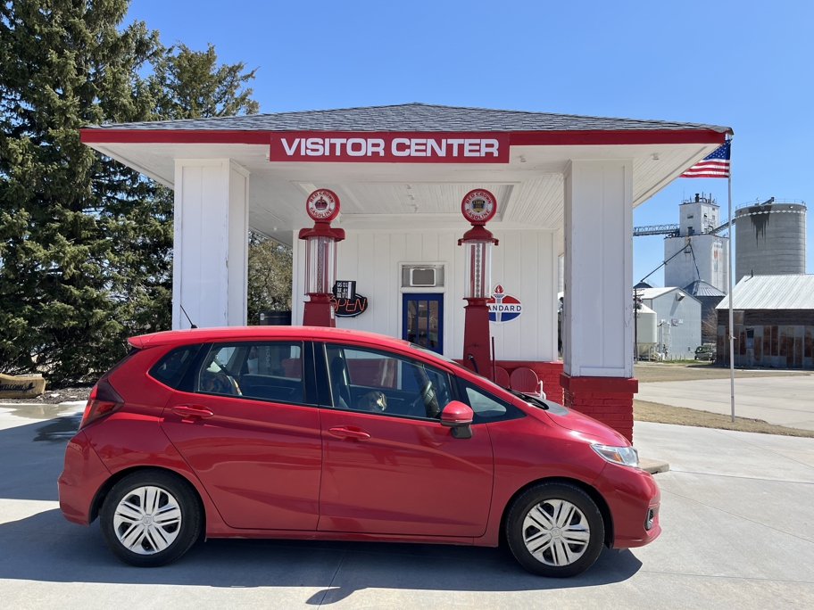

Back in Lebanon, we stopped at the beautiful, spotless and informative visitor center, and then at the town's real nerve center, Ladow's Market, for water, apples, dog treats and T-shirts. Our car would not look this good again until I washed it in California, because Google Maps was about to send us onto an unpaved county road with the worst dust I ever hope to experience.
Kansas Lebanon